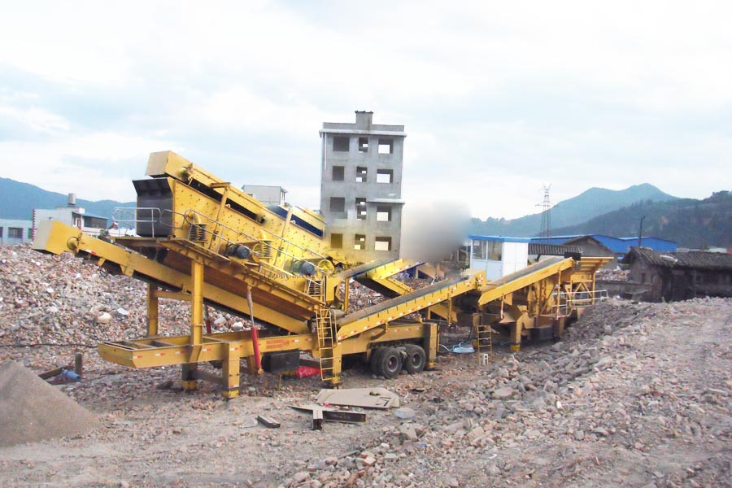

Construction waste crushing production line

Mobile construction waste crushing station for urban construction waste crushing.
concrete block making machine
Waste concrete crushing production line much money, broken equipment, milling equipment, is currently a lot of stones factory are used to "jaw crusher + cone crusher + Impact Sand" as the host of granite sand-meter concrete pump product assessment, machine prices, production line configuration, installation, and accessories.
Concrete crusher, concrete crushing equipment, concrete crusher, mill production line production line configuration gravel production line sand production line construction waste related videos ... concrete crusher is widely used in metallurgical industry, construction industry, road building industry, chemical industry and phosphate industry.

The manufacture of concrete is fairly simple. First, the cement (usually Portland cement) is ready. Next, one other ingredientsaggregates (such as sand or gravel), admixtures (chemical additives), any necessary fibers, and waterare mixed along with the cement to create concrete. The concrete will then be shipped for the work place and placed, compacted, and cured.
Concrete Concrete is really a blend of paste and aggregates. It typically includes cement, rock, sand and water. By way of a chemical reaction called hydration, the paste hardens and gains strength to make the rock-like mass referred to as concrete. concrete is fire-resistant and has become probably the most common building materials on earth. The binder usually used today is portland cement. The aggregate is usually sand and gravel. Concretes in use today are formulated with very specific performance characteristics in mind and will include lightweight, heavyweight, porous, fiber-reinforced, mass, high-performance and cellular concretes to mention just a couple of. One trusted specialty concrete is recognized as “shotcrete”. The main difference between shotcrete and its particular close cousin, concrete, will be the placement method. Concrete Crushing Equipment Many types of crushers can be used as concrete crushing equipment. Jaw crusher is primary crusher, its crushing ratio is 4-6. Natural stones enter into it for primary crushing.
Concrete crusher, concrete crushing equipment prices, concrete crusher manufacturers, CAG produce concrete crusher is a waste concrete as a raw material crushing equipment, widely used in metallurgical industry, construction, road building and other industries, especially construction waste The concrete was crushed, good quality of finished materials.
Impact crusher can be the most popular concrete machine, and is also usually the secondary crusher. Vsi crusher is essential crusher, because stones after crushing is fractal. VSI crusher can also be called stone shapping machine. After shapping by vsi crusher, probably the most aggregate is cubic. Vibrating Screen is screening machine, it can screen the eligibl aggregate. CAG machinery, the professional manufacturer of concrete crushing equipment, provides concrete crushing equipment, concrete crushing machine and concrete crushing plant for sale, hire, rental. If you have concrete have to be crushed or recycling, you can purchase or hire our concrete crushing plant.
Processing one million tons of cement pavement concrete mobile crusher site per year production line, mobile construction waste crushing station is a construction waste recycling product, the device to break the traditional "fixed" the concept of thinking construction waste disposal equipment, station customer's position to eliminate harsh environments, crushing site, complex and complicated logistics base configuration disorder is the goal, through the integration of vehicle systems.
Supply of concrete production line of concrete crushing recycling works, concrete crushing jaw crusher is mainly used for a variety of ores and bulk materials of medium-grained broken. Jaw Crusher (broken jaw) is widely used in mining, smelting, building material, highway, railway, water conservancy and chemical industry.
Leave Me A Message, Now
If you have any questions regarding equipment prices, production line configuration or other problems, you can send a message to us, we will contact you soon.